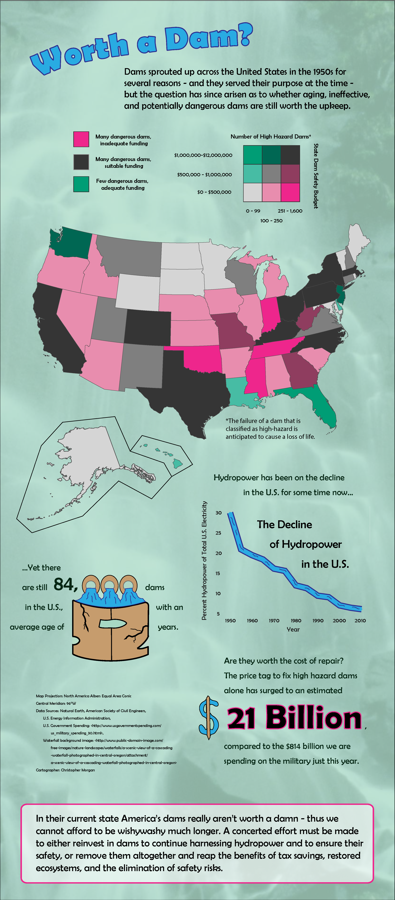

Geography 572: Graphic Design in Cartography, also had a lab on infographics. Since I'm passionate about both our country's ecosystems and infrastructure, I chose to look at the aging of dams across the country. Inspired by DamNation, a documentary we watched on the topic in a limnology course I took, I decided to look at overall statistics on America's dams, as well as individual states and their funding levels for a map component.
